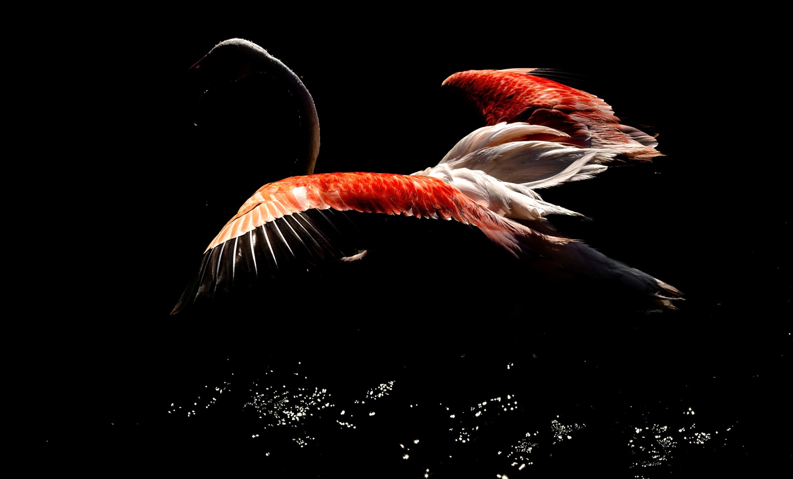
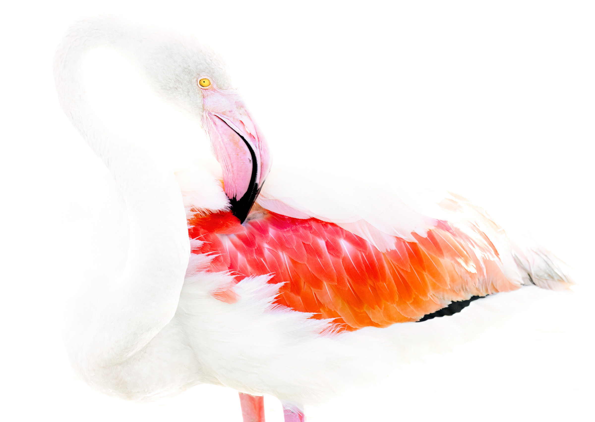
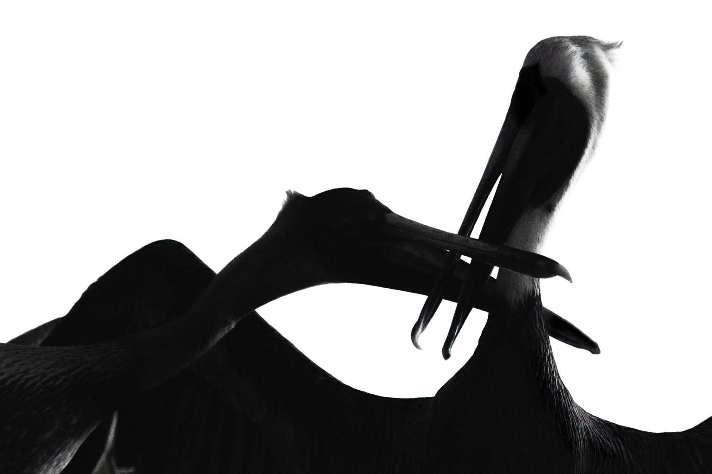

MaximilienBozon
Scroll
Statement
Maximilien Bozon is a photographer and veterinarian based between Paris and London.
Influenced by his scientific background, he approaches animal bodies both as living beings and as anatomical forms.
Through minimal compositions and controlled light, his images oscillate between observation and abstraction. By isolating his subjects in shadow, he invites the viewer to reconsider the way we perceive animals — not only as species, but as physical presences.
Shadow
Animals held in near-darkness, where a single light decides how much of a body we are allowed to see.
41 plates
Light
The same subjects turned toward the source: form described by illumination rather than concealed by it.
24 plates
Monochrome
Colour removed, leaving line, texture and anatomy to carry the picture on their own.
16 plates